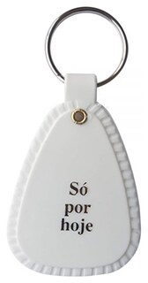

🦋✨ GRUPO TRANSCENDER NARCÓTICOS ANÔNIMOS ✨🦋 Grupo de interesse especial em acolher pessoas trans, travestis, não-bináries e dissidentes de gênero. 🔗 Link do Grupo Transcender no WhatsApp: https://chat.whatsapp.com/BNd0R3SvYSy0ysDapaeBxs?s=cl&p=i&mlu=4 🔗Link da Reunião no Zoom: https://us05web.zoom.us/j/5794524106?pwd=1LBbuRzFdPsYLTiqilBl5dRQbItU27.1 ID: 579 452 4106 Senha: 000000 💖 7ª Tradição: grupotranscenderna@gmail.com 📅 Reuniões todos os dias às 19h.
Grupo Transcender de Narcóticos Anônimos
Informe a data limpa para ver o tempo limpo e a ficha que a pessoa pode receber.
Alguém vai trocar de ficha hoje? De quanto tempo e quem vai entregar?
Grupo Transcender de Narcóticos Anônimos
Este é o manual de procedimentos do Grupo Transcender. Ele existe para facilitar o serviço, preservar a unidade do grupo e oferecer uma referência simples para servidores e membros. As diretrizes se baseiam nas decisões da consciência de grupo registradas nas reuniões administrativas e nas práticas em vigor.
Grupo Transcender de Narcóticos Anônimos

Boas-vindas · Ingresso
Esta ficha é para quem está chegando. Ela representa o desejo de parar de usar. Que bom ter você aqui em Narcóticos Anônimos!